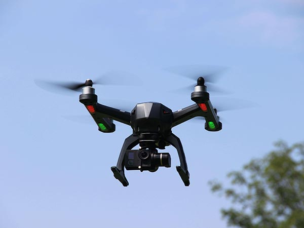

SOJA
A soja é uma cultura de grande importância econômica e alimentar,
sendo amplamente cultivada principalmente nos Estados Unidos, Brasil,
Argentina e outros países. Ela é utilizada tanto para alimentação humana
quanto animal, além de ser uma fonte importante de óleo vegetal e proteína vegetal.
No Brasil, por exemplo, a soja é uma das principais culturas agrícolas, com
extensas áreas de plantio especialmente nos estados do Centro-Oeste. A produção
envolve técnicas modernas de cultivo, incluindo o uso de maquinário agrícola avançado,
sementes geneticamente modificadas e práticas de gestão sustentável para minimizar impactos ambientais.
O mercado global de soja é influenciado por diversos fatores, como condições climáticas,
políticas agrícolas, demanda internacional e variações nos preços de commodities. A
sustentabilidade na produção de soja tem sido cada vez mais discutida, com iniciativas
para reduzir desmatamentos, proteger áreas de conservação e promover práticas agrícolas responsáveis.
Soja possui ciclos fenológico que podem ser divididos em:
6 fases
• Germinação:
Inicia-se com a absorção de água pela semente, seguida pela emergência da plântula através do solo.
• Desenvolvimento Vegetativo:
Nesta fase, a planta cresce rapidamente, formando folhas e desenvolvendo um sistema radicular robusto.
As folhas vão se expandindo e ocorre a formação de novas folhas
• Floração:
É uma fase crucial onde a planta começa a produzir flores. A soja é uma cultura autopolinizada, ou seja,
a polinização ocorre dentro da própria flor
• Formação de Vagens:
Após a polinização, as flores fertilizadas se transformam em vagens. Este é um período crítico para
determinar o potencial de produtividade da cultura.
• Maturação:
As vagens começam a amadurecer e os grãos dentro delas ganham tamanho e peso. A cor das vagens muda
de
verde para amarelo ou marrom conforme amadurecem
• Colheita:
É a fase final, quando os grãos atingem sua maturidade completa e estão prontos para serem colhidos.
A
colheita da soja geralmente ocorre quando a umidade dos grãos está adequada e os teores de óleo e
proteína
estão otimizados.
Clima
A soja é uma cultura de clima temperado a subtropical. Ela requer temperaturas moderadas durante o seu
ciclo de crescimento. A faixa ideal de temperatura varia de acordo com a fase fenológica da planta, mas
geralmente a soja cresce melhor em temperaturas diurnas entre 20°C e 30°C. Temperaturas muito altas ou
muito baixas podem afetar negativamente o desenvolvimento da planta e a formação dos grãos. A soja é uma
cultura de dia curto, o que significa que a quantidade de luz solar influencia seu crescimento e
desenvolvimento.
Ela requer um número mínimo de horas de luz por dia para maximizar a fotossíntese e a formação de grãos.
A disponibilidade de água é crucial para o crescimento saudável da soja. Ela requer quantidades adequadas
de água durante todo o seu ciclo, especialmente durante as fases de floração e formação de grãos. Chuvas
excessivas ou falta delas em momentos críticos podem afetar negativamente a produção.
A umidade relativa do ar também desempenha um papel importante. Um clima muito seco pode levar ao estresse
hídrico nas plantas, enquanto umidade excessiva pode aumentar o risco de doenças fúngicas.
A soja é plantada geralmente na primavera e colhida no outono, adaptando-se bem a climas com estações bem
definidas. O ciclo da cultura é projetado para otimizar o uso das condições climáticas favoráveis durante
essas estações.
Eventos climáticos extremos, como geadas tardias, secas prolongadas, tempestades severas ou ondas de calor,
podem ter impactos significativos na produção de soja, levando a perdas de rendimento.
Escolha da área
A soja cresce bem em solos com boa drenagem e fertilidade adequada. Solos profundos, bem estruturados e
ricos em matéria orgânica são ideais para a cultura. É importante verificar a acidez do solo (pH) e
corrigir se necessário, pois a soja prefere solos ligeiramente ácidos (pH entre 5,5 e 6,5).
A topografia da área deve ser adequada para o manejo mecânico e a drenagem eficiente. Terrenos planos ou
levemente inclinados são mais adequados para a mecanização das operações agrícolas, como plantio e
colheita.
A soja requer uma quantidade adequada de água durante todo o seu ciclo. Locais com acesso a fontes de
água para irrigação ou com chuvas regulares e bem distribuídas são preferíveis, especialmente em regiões
onde a seca pode ser um problema.
Conhecer o histórico agrícola da área é importante para entender possíveis problemas de pragas, doenças
ou problemas de solo. Práticas adequadas de rotação de culturas também podem beneficiar a produção de
soja, reduzindo a pressão de doenças e pragas específicas da cultura.
Preparação e adubação do solo
Antes do plantio, é essencial preparar o terreno adequadamente. Isso inclui a correção da estrutura do solo
para facilitar a penetração de raízes e o manejo de água. O preparo geralmente envolve o uso de arados,
grades ou subsoladores para aeração e nivelamento do solo.
A limpeza prévia do terreno é importante para reduzir a competição com plantas daninhas. Métodos mecânicos,
como aração e gradagem, ou o uso de herbicidas adequados, são comuns para o controle de plantas indesejadas.
Baseado na análise de solo, ajustes podem ser feitos para corrigir a acidez (pH) do solo e garantir a
disponibilidade de nutrientes essenciais para o crescimento das plantas. Isso pode envolver a aplicação de
calcário para elevar o pH ou de fertilizantes para suprir macronutrientes como nitrogênio (N), fósforo (P) e
potássio (K), além de micronutrientes como zinco, boro e manganês, conforme necessário.
A adubação de base é realizada antes do plantio, incorporando fertilizantes no solo para fornecer nutrientes
essenciais durante o crescimento inicial das plantas. A quantidade de fertilizantes a ser aplicada depende
das recomendações baseadas na análise de solo e nos requisitos específicos da soja.
Durante o ciclo de crescimento da soja, podem ser necessárias aplicações adicionais de fertilizantes para
suprir demandas específicas da cultura. Isso pode incluir fertilizações foliares ou fertirrigação,
dependendo das necessidades identificadas ao longo do desenvolvimento das plantas.
Embora a soja seja capaz de fixar nitrogênio atmosférico em simbiose com bactérias nodulantes, em algumas
situações pode ser benéfico o uso controlado de fertilizantes nitrogenados para otimizar o crescimento
inicial e a produtividade da cultura.
Plantio
A seleção da variedade de soja adequada é crucial e deve levar em conta características como ciclo de
crescimento, resistência a doenças e adaptação ao ambiente local.
As sementes de soja devem ser de alta qualidade e tratadas para proteção contra doenças e insetos. A
densidade de semeadura varia, mas geralmente é em torno de 10 a 20 sementes por metro quadrado, dependendo
da variedade e das condições locais.
As sementes de soja são plantadas a uma profundidade adequada para garantir uma boa germinação e emergência
das plântulas, geralmente entre 3 a 5 centímetros, dependendo do tipo de solo e das condições climáticas.
O espaçamento entre linhas também varia, mas geralmente é entre 40 a 50 centímetros, proporcionando espaço
suficiente para o desenvolvimento das plantas e facilitando as operações de manejo.
Dependendo das condições climáticas, a irrigação pode ser necessária para garantir que as sementes germinem
e as plântulas se estabeleçam adequadamente.
As primeiras semanas após o plantio são críticas para o controle de plantas daninhas, que podem competir com
as plantas de soja por nutrientes, água e luz.
Práticas como a aplicação de fertilizantes de cobertura e a monitorização do estado nutricional das plantas
são importantes.
A fase de floração é crucial para a definição da produtividade da soja. Condições climáticas favoráveis e
manejo adequado podem maximizar a formação de vagens e, consequentemente, a produção de grãos.
À medida que os grãos de soja amadurecem, é importante monitorar a umidade dos grãos e planejar a colheita
no momento ideal para preservar a qualidade dos grãos e evitar perdas.
Controle de pragas e doenças
É fundamental monitorar regularmente a presença de pragas e doenças nas lavouras de soja, especialmente
durante períodos críticos como o desenvolvimento vegetativo e a formação de vagens.
A escolha de cultivares de soja geneticamente resistentes a pragas e doenças específicas pode reduzir a
necessidade de tratamentos químicos e aumentar a resistência da cultura.
A rotação de culturas ajuda a quebrar o ciclo de vida de pragas e patógenos, reduzindo sua população no solo
e contribuindo para o manejo integrado de pragas e doenças.
Práticas como o manejo adequado de irrigação e fertilização, o espaçamento adequado entre plantas e a
eliminação de restos culturais após a colheita podem ajudar a reduzir o ambiente favorável ao
desenvolvimento de doenças.
Quando necessário, o uso de defensivos agrícolas registrados para a cultura da soja pode ser uma medida
eficaz para o controle de pragas e doenças. É importante seguir as recomendações técnicas e de segurança
para aplicação desses produtos.
Após a colheita, é importante monitorar a qualidade dos grãos armazenados para evitar a propagação de
doenças fúngicas que podem reduzir a qualidade e o valor comercial da safra.
Tecnologia
Na produção da soja, várias máquinas desempenham papéis importantes para garantir eficiência e
produtividade. Você pode comprar máquinas para auxiliar na produção de soja em:
Empresas especializadas em equipamentos agrícolas: Existem muitas empresas que fabricam e comercializam
máquinas específicas para a produção agrícola, incluindo semeadoras, colheitadeiras, pulverizadores e outros
equipamentos utilizados no cultivo e manejo da soja.
Feiras e exposições agrícolas: Eventos agrícolas são excelentes oportunidades para ver novos equipamentos em
ação, conversar diretamente com fabricantes e distribuidores, e obter informações detalhadas sobre as
tecnologias mais recentes disponíveis para o cultivo de soja.
Revendedores e distribuidores agrícolas: Muitos revendedores oferecem uma ampla gama de máquinas agrícolas,
incluindo aquelas específicas para a cultura da soja. Eles podem fornecer orientação sobre a escolha do
equipamento mais adequado às suas necessidades e condições locais.
Consultores agrícolas: Profissionais de consultoria agrícola podem oferecer recomendações baseadas em suas
necessidades específicas de cultivo de soja, ajudando na seleção de tecnologias e equipamentos apropriados.
Plataformas online de comércio agrícola: Existem plataformas dedicadas ao comércio de equipamentos
agrícolas, onde você pode encontrar uma variedade de máquinas para a produção de soja, com opções de compra
diretamente de fabricantes e distribuidores.
Instituições de pesquisa agrícola: Universidades, institutos de pesquisa e centros de extensão agrícola
frequentemente desenvolvem e testam novas tecnologias para o cultivo de soja. Eles podem oferecer
informações sobre as mais recentes inovações em máquinas e práticas agrícolas para melhorar a produção de
soja

Dependendo do modelo pode variar entre R$ 135.000,00/R$ 14.500,00
Sensoriamento Remoto e Imaginologia: • Sistemas de Informação Geográfica (SIG): Permitem o mapeamento
detalhado das propriedades agrícolas, ajudando na gestão de áreas específicas para otimização de insumos
e manejo de variabilidade do solo.
Monitoramento por Satélite e Drones: Utilizados para monitorar o crescimento das culturas, identificar
áreas com problemas de saúde das plantas, monitorar o manejo de irrigação e detectar pragas ou doenças
precocemente.
Sistemas de Posicionamento Global (GPS): Integrados a tratores e outras máquinas agrícolas para permitir
a operação precisa em campo, otimizando o uso de insumos e reduzindo a sobreposição de operações.
Sensoriamento Remoto e Imaginologia: Tecnologias que permitem a análise precisa das condições das
plantas, ajudando na detecção precoce de estresses hídricos, deficiências nutricionais e doenças.
Plantio Direto: Prática que envolve o plantio sem o revolvimento do solo, mantendo a cobertura vegetal
anterior. Reduz a erosão do solo, conserva a umidade e melhora a estrutura do solo.
Máquinas Plantadeiras de Precisão: Equipadas com sistemas que permitem o plantio de sementes em
profundidades precisas e com espaçamento uniforme, melhorando a germinação e o estabelecimento inicial
das plantas.
Colheitadeiras Avançadas: Equipadas com sistemas de monitoramento e ajuste automático, capazes de colher
de maneira eficiente e preservar a qualidade dos grãos durante o processo de colheita.
Sementes Geneticamente Modificadas (GM): Desenvolvidas para resistir a pragas, tolerar herbicidas
específicos e melhorar a produtividade sob condições adversas, como estresses hídricos e solos pobres.
Melhoramento Genético Convencional: Utilizado para desenvolver novas variedades de soja com
características específicas, como maior resistência a doenças, melhor qualidade de grãos ou adaptação a
condições climáticas regionais.


Dependendo do modelo pode variar entre R$ 157.005,00/R$ 220.000,00
Tecnologias de Gestão de Dados e Agricultura Digital:
Softwares de Gestão Agrícola: Plataformas que integram dados de campo, clima e operações agrícolas para ajudar
os produtores a tomar decisões informadas, como planejamento de plantio, aplicação de insumos e manejo de
pragas.
Internet das Coisas (IoT): Utilizada em sistemas de irrigação, sensores de umidade do solo e controle de
ambiente em estufas, permitindo o monitoramento em tempo real e a automação de processos agrícolas.